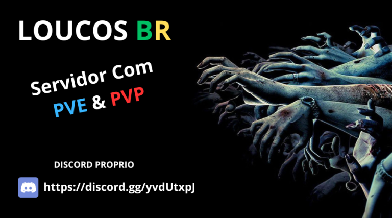

| 1- Não seja tóxico, ponto final. Somos uma família amigável com uma comunidade saudável. |
| 2- Se estiver no Discord, seu apelido precisa corresponder ao seu nome no jogo. |
| 3- Sem spam no chat principalmente sobre assuntos delicados (religião/política). |
| 4- Sem publicidade/discussão de outros servidores ou tentativa de furto de jogadores. |
| 5- Se você precisar de suporte da equipe, deixar um tíquete de suporte no Discord é o que mais nos chama a atenção. |
| 6- Não interrompa o jogo/jogos ou chat. Toxicidade e interrupção de qualquer tipo são proibidas. |
| 7- Não revele informações sobre você, pessoalmente. As comunidades online são ótimas, mas ainda são "estranhas". |
